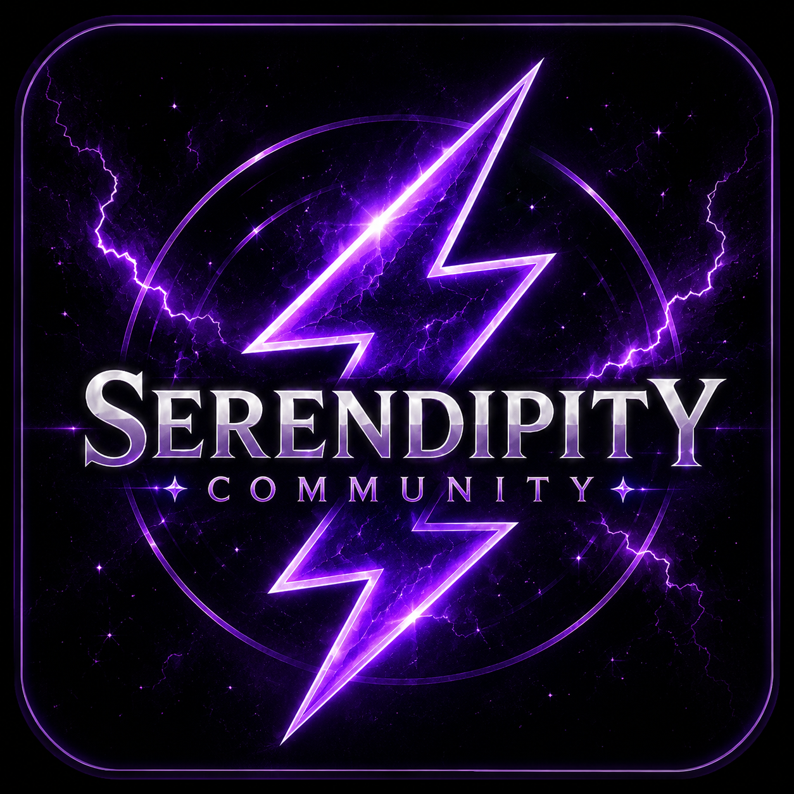

Serendipity Community
Pusat Komunitas Gaming & Serendipity Roblox. Bergabunglah dengan petualangan kami!
Dukung Kami di Saweria
Gabung Server Discord
Mainkan Mount Siniking
Mainkan Mount Syududu
Mainkan Mount Mariking
Gabung Grup Roblox